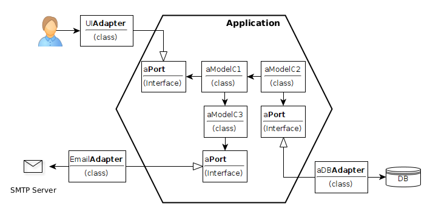
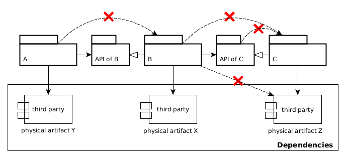

ENRIQUE MOLINARI

¿Qué entendemos por
Arquitectura de Sofware?
Veamos algunas definiciones...
Technical Report: An Introduction to Software Architecture (Shaw y Garlan, 1994)
As the size and complexity of software systems increases, the design problem goes beyond the algorithms and data structures of the computation: designing and specifying the overall system structure emerges as a new kind of problem.
Technical Report: An Introduction to Software Architecture (Shaw y Garlan, 1994)
Structural issues includes: protocols for communication, synchronization and data access; assignment of functionality to design elements; physical distribution; composition of design elements; scaling and performance; and selection among design alternatives. This is the software architecture level of design
Grady Booch
All architecture is design, but not all design is architecture
Architecture represents the significant design decisions that shape a system, where significant is measured by cost of change.
Grady Booch
All architecture is design, but not all design is architecture
Architecture represents the significant design decisions that shape a system, where significant is measured by cost of change.

Software Architecture in Practice (3era Edición, 2012)
The software architecture of a system is the set of structure needed to reason about the system, which comprises software elements, relations among them, and properties of both.
Software Architecture in Practice (3era Edición, 2012)
The software architecture of a system is the set of structure needed to reason about the system, which comprises software elements, relations among them, and properties of both.

Bob Martin (Clean Architecture Book, 2017)
Software architecture is the art of drawing lines that I call boundaries. Those boundaries separate software elements from one another, and restrict those on one side from knowing about those on the other.
Bob Martin (Clean Architecture Book, 2017)
Software architecture is the art of drawing lines that I call boundaries. Those boundaries separate software elements from one another, and restrict those on one side from knowing about those on the other.

Ralph Johnson
Architecture is about the important stuff. Whatever that is.
Ralph Johnson
Architecture is about the important stuff. Whatever that is.

Martin Fowler (2002)
The software industry delights in taking words and stretching them into a myriad of subtly contradictory meanings. One of the biggest sufferers is "architecture". I tend to look at “architecture” as one of those impressive-sounding words, used primarily to indicate that we’re talking something that’s important. But I’m pragmatic enough not to let my cynicism get in the way of attracting people to my book. :-).
Martin Fowler (2002)
“Architecture” is a term that lots of people try to define, with little agreement. There are two common elements: One is the highest-level breakdown of a system into its parts; the other, decisions that are hard to change.
Martin Fowler (2002)
It’s also increasingly realized that there isn’t just one way to state a system’s architecture; rather, there are multiple architectures in a system, and the view of what is architecturally significant is one that can change over a system’s lifetime.
Martin Fowler (2002)
It’s also increasingly realized that there isn’t just one way to state a system’s architecture; rather, there are multiple architectures in a system, and the view of what is architecturally significant is one that can change over a system’s lifetime.

Software Architecture Fundamentals (2020)
The industry as a whole has struggled to precisely define "software architecture". Some architects refer to software architecture as the blueprint of the system. The issue with these common definitions is understanding what the blueprint actually contains.
What is analyzed when an architect analyzes an architecture?
Software Architecture Fundamentals (2020)
Software architecture consists of the structure of the system, combined with architecture characteristics the system must support, architecture decisions, and finally design principles.
Software Architecture Fundamentals (2020)
-
Structure of the system: The architecture style (Layered, Modular, etc).
-
Architecture characteristics: También conocidos como Quality Atributes o Requerimientos No Funcionales. Ejemplo: Scalability.
-
Architecture decisions: Ejemplo: Solo la capa de negocios puede hablar con la capa de persistencia.
-
Design Principles: Consejos (guidelines) mas que reglas que debemos respetar. Por ejemplo, utilzación de comunicación asíncrona por sobre la síncrona.
¿Mareados?
Arquitectura de Software es lo que Uds decidan, segun que autor les gusta más.
¿Quizas representa muchas cosas y por eso cuesta encontrar una única definición?
¿Qué decimos que es en esta materia?
- Tiene que ver con cómo estructuramos u organizamos el sistema a nivel lógico y a nivel físico.
- Estructuramos u organizamos un sistema identificando sus elementos y especificando como se relacionan entre ellos.
¿Qué decimos que es en esta materia?
- A nivel lógico (Arquitectura Lógica) tenemos elementos de software como las funciones, métodos, clases, los paquetes, lo módulos, las capas (layers). Se comunican de la forma in-process.
- A nivel físico (Arquitectura Física) tenemos elementos en runtime (procesos), y la forma en que los deployamos en HW. Sé comunican de la forma inter-process.
¿Qué decimos que es en esta materia?
- Estructuramos u organizamos un sistema de cierta forma con el objetivos de cumplir con Atributos de Calidad específicos (modificabilidad, escalabilidad, disponibilidad, seguridad, etc).
- Finalmente, a dicha estructura le agregamos desiciones de arquitectura (o design decisions) que debemos garantizar sean cumplidas.
Ilustremos ésta definición
- Supongamos una aplicación Web con un back-end Web en SpringBoot y un front-end en React.
- Con eso ya tenemos nuestra primera definición de arquitectura física.
- Atributo de Calidad: Modificabilidad. Me permite distribuir desarrollo de front-end vs back-end y avanzar en paralelo sin grandes pérdidas de tiempo en comunicación entre equipos.
Arquitectura Física

Arquitectura Física

Arquitectura Física (Deployment)
Arquitectura Física (Deployment, opción 2)

Atributo de Calidad: Escalabilidad. Me permite escalar (asignar mas HW) en forma independiente.
Ilustremos ésta definición
- ¿Y qué organización lógica le quiero dar a mi back-end?
- La más simple y conocida por todos: capas.
Ilustremos ésta definición
- Con esta organización lógica ya tenemos la primer decisión de arquitectura que debemos cumplir.
- Las dependencies entre las capas. Controller no puede acceder directamente a la capa de Acceso a Datos.
Arquitectura de Software: repasemos
- Estructura u organización física: Procesos (aplicaciones en runtime) y Deployment
- Estructura u organización lógica: Capas, Módulos (paquetes en Java, las clases tienen mucho detalle)
- Organizamos los elementos de una arquitectura para cumplir ciertos atributos de calidad.
- Definimos Decisiones de Arquitectura que debemos cumplir.
Hablemos ahora sobre los estilos que existen para crear estructuras de módulos.
Estructuras de Módulos
¿Por qué debemos partir una aplicacion en módulos? y ¿Por qué definir sus relaciones y respetarlas?
Porque cuando hagamos un cambio tendremos noción de donde éste repercute.
Porque de esa forma tenemos "pequeños sistemas" más simples. Mas simple implica más facil de modificar.
Estructuras de Módulos

Estructuras de Módulos
Antes dijimos que debíamos encontrar, en el lenguaje de programación que utilicemos, que abstracción (estructura sintáctica) podemos utilizar para crear éstas módulos o capas.
¿Cuáles son las opciones en Java?
Desde Java v1, los paquetes. Java v9 incorporó la construcción sintáctica module.
Estructuras de Módulos
¿Cuál es la diferencia entre módulos o capas?
Cuando hablamos de capas, hablamos de una partición horizontal del sistema, segun cuestiones técnicas.
Cuando hablamos de módulos, hablamos de abstracciones que agrupan clases con el propósito de reutilización o para partir verticalmente una aplicación.
Estructuras de Módulos
En aplicaciones simples alcanza con una partición horizontal.
En aplicaciones que preveemos serán complejas necesitamos necesariamente partición vertical.
Alternativa al estilo de arquitectura en Capas
Arquitectura Hexagonal (o Ports & Adapters)
Creada por Alistair Cockburn
Arquitectura Hexagonal

Estructuras de Módulos: Ejemplo

Separación Lógica vs Física
Lógica: Mismo espacio de memoria, puedo importar sus clases, invocar métodos (in-process).
Física: Distinto espacio de memoria, invocación inter-process.
Separación Lógica vs Física: Verificación
Java9 mejora este problema:
module radioa.competition {
exports competition.model.api;
//only for injection
exports competition.model to radioa.main;
exports competition.persistence to radioa.main;
//others requires
requires java.sql;
...
}Separación Lógica vs Física: Verificación
ArchUnit nos ayuda a detectar dependencias inválidas:
@Test
public void packageApiOfCOnlyDependOnItOrJdk() {
JavaClasses jc = new ClassFileImporter()
.importPackages("apiofc", "c", "a", "apiofa"...);
classes().that()
.resideInAnyPackage("apiofc")
.should()
.onlyDependOnClassesThat()
.resideInAnyPackage("apiofc","java..")
.check(jc);
}